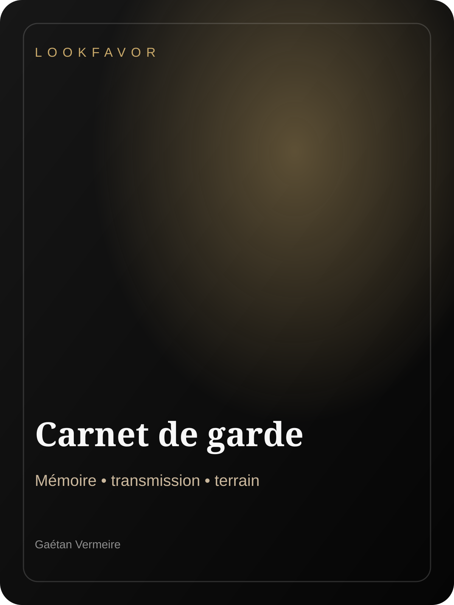
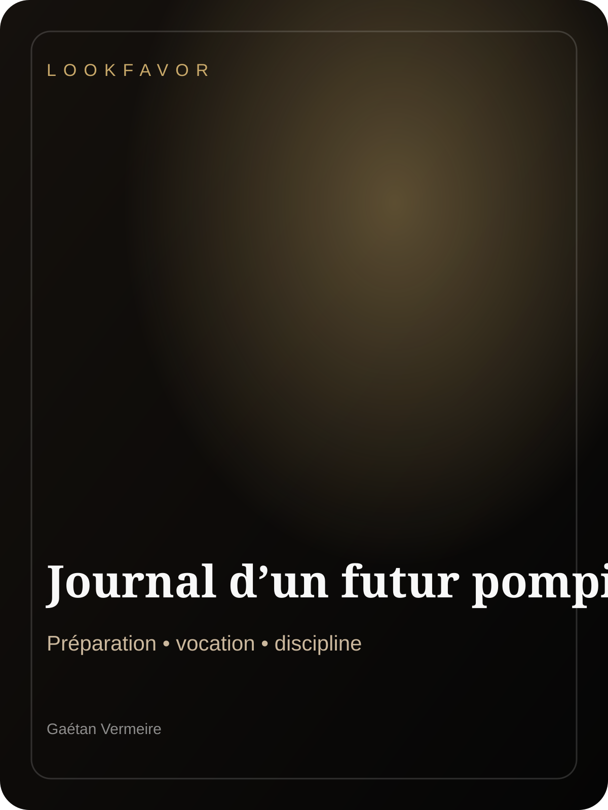

01
01Entre Flammes & Silences
Grand récit narratif pompier.
Livres • récits • univers pompier
La même logique que le site vitrine existant : présenter le livre disponible, annoncer les projets à venir et orienter vers Amazon. Ici, le scroll devient une narration.
Découvrir le livreLivre disponible à l’achat
Une chronique de pompier-photographe en Belgique : terrain, regard, silence, mémoire.
Choisir sa version
Le site oriente le lecteur vers la langue du livre et la boutique Amazon adaptée à son pays.
Prochain livre
Le futur grand récit narratif autour du métier, plus intime, plus brut, plus universel.
Livre disponible
Un livre pour entrer dans l’univers d’un pompier-photographe belge : des images, des scènes, des émotions et une manière de raconter le réel sans le trahir.
Ce que ce livre vous apporte
Acheter le livre
Les boutons ci-dessous sont prêts à recevoir tes liens Amazon exacts. Remplace simplement les URL dans script.js.
Prochain livre à venir
Un projet plus narratif, sans chercher l’effet facile : le feu, le doute, la fatigue, la fraternité, et ce que le métier laisse derrière lui quand la sirène s’arrête.
Voir les autres projetsProjets éditoriaux
01Grand récit narratif pompier.

02Un carnet pour noter souvenirs, transmissions et apprentissages de garde.

03Un support de progression pour préparer son entrée dans le métier.
Qui est l’auteur ?
Pompier professionnel à Bruxelles, photographe de reportage et auteur de l’univers Lookfavor. Le projet réunit le terrain, l’image, l’écriture et la transmission.
Objectif : créer une bibliothèque cohérente autour de la vie pompier. Pas juste vendre un livre. Construire un univers. Là, on commence à parler sérieusement.